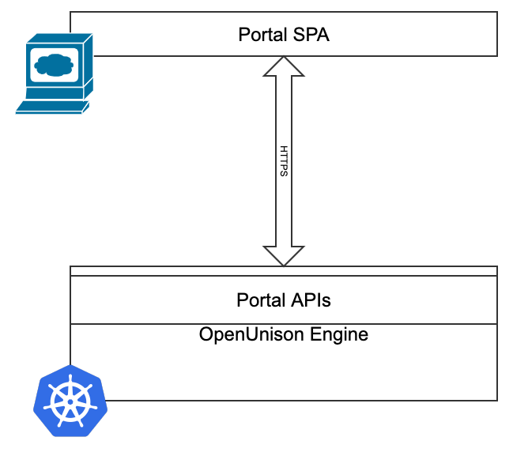

OpenUnison RESTful APIs
The OpenUnison portal you use to access your clusters is made of three components:

- The OpenUnison engine that interacts with Kubernetes, provides APIs, performs authentication, etc.
- The APIs exposed by the OpenUnison engine that are called by the OpenUnison portal's frontent
- Single Page Application (SPA) portal that calls the APIs
When used from your browser, the APIs are authenticated using your logged in session cookie. There are multiple APIs each with their own unique purpose. The APIs are all implemented as individual HttpFilter implementations and can be configured with their own session context, authentication chain, etc. This makes OpenUnison's API platform very flexible and easily integrated into third party portals such as Backstage. Exposing one of OpenUnison's APIs has the following steps:
- Define an
AuthenticationChainobject that will authenticate requests. The recommended chain should use thecom.tremolosecurity.proxy.auth.oauth2.OAuth2JWTauthenication mechanism or a comparable API friendly authentication system. Avoid username and password mechanisms. - Create an
Applicationthat defines your API, referencing theHttpFilterthat implements the API
We'll cover this process next to show how to expose one of OpenUnison's integrated APIs into your portal.
Creating an OpenUnison API
OpenUnison's flexability makes it easy to create new APIs. In this example we'll create an API that calls a single workflow.
Create a Workflow to Call
In this example, we'll create a simple Workflow and call that Workflow using a RESTful API call using the same JWT you would use with Kubernetes. First, we'll create a simple workflow that just prints out the user's information to the logs.
This workflow simply prints out the user's information. Create it in your cluster. Next, we'll define how to authenticate our service.
Create an AuthenticationChain
The next step is to define an AuthenticationChain. As the name suggests, an AuthenticationChain defines a series of steps, called AuthenticationMechanisms that determines how a user is authenticated. The recommended approach is to use the oauth2jwt that is already defined with the Kubernetes portal. This mechanism lets you authenicate JWTs using either a pinned certificate from an issuer or from an OIDC discovery document. The below chain with authenticate all requests against the same OIDC issuer used by Kubernetes:
The above chain will validate all JWTs against OpenUnison's Kubernetes identity provider. It will link to OpenUnison's internal LDAP virtual directory. For most portals, this means that it will pull user data from the User objects stored in the openunison namespace. If the user can't be found, OpenUnison will create a mock entry and it can be still be used. The next step is to define our API.
Create an Application
Once your AuthenticationChain is created, the final step is to create an Application for the API you want to expose. The below Application exposes our workflow via a simple API call.
The Application object hosts the API for calling our workflow. Specific explinations:
| Lines | Description |
|---|---|
| 7 | How long to cache authorization decisions in milliseconds |
| 8 - 17 | Determines how to configure your cookies for requests Since this is an API requests cookies are disabled |
| 19 - 30 | Every Application is a collection of URLs. In this case there's a single url that defines our API |
| 20 | This URL uses the AuthenticationChain defined above |
| 21 | Rules that define who can use this API. Generally defined using an LDAP filter based on attributes |
| 24 - 27 | Defines what HttpFilter implementations will be used. In this case, a single object in the chain is used to define our API |
| 28 | Every url must have a host component for routing purposes |
| 30 | Every url must have a path that defines how to call it |
Call the API
Once the Application is created (make sure to create the Application by creating a file and running kubectl create -f on it), you can test out your new API endpoint. First, set the OU_HOST environment variable:
Set OU_HOST to your OpenUnison portal URL. Next, get your id_token from your portal and set it to the JWT environment variable.
export JWT='eyJraWQiOiJDPU15Q291bnRyeSwgU1Q9U3RhdGUgb2YgQ2x1c3RlciwgTD1NeSBDbHVzdGVyLCBPPU15T3JnLCBPVT1LdWJlcm5ldGVzLCBDTj11bmlzb24tc2FtbDItcnAtc2lnLUM9TXlDb3VudHJ5LCBTVD1TdGF0ZSBvZiBDbHVzdGVyLCBMPU15IENsdXN0ZXIsIE89TXlPcmcsIE9VPUt1YmVybmV0ZXMsIENOPXVuaXNvbi1zYW1sMi1ycC1zaWctMTY1MTY3ODcyMTc1OCIsImFsZyI6IlJTMjU2In0.eyJpc3MiOiJodHRwczovL2s4c291LmFwcHMuMTkyLTE2OC0yLTEwNy5uaXAuaW8vYXV0aC9pZHAvazhzSWRwIiwiYXVkIjoia3ViZXJuZXRlcyIsImV4cCI6MTY1MTc2NTE1MSwianRpIjoiWFliVzZuRk1nVnJRZThHOFNOSTg3dyIsImlhdCI6MTY1MTc2NTA5MSwibmJmIjoxNjUxNzY0OTcxLCJzdWIiOiIwMHUzZnVzZmo2akZMVVJicDM1NyIsIm5hbWUiOiIgTW9zbGV5IiwiZ3JvdXBzIjpbImFkbWluaXN0cmF0b3JzLWV4dGVybmFsIiwiazhzLWNsdXN0ZXItazhzLWFkbWluaXN0cmF0b3JzLWV4dGVybmFsIiwidXNlcnMiLCJhZG1pbmlzdHJhdG9ycy1pbnRlcm5hbCIsIms4cy1jbHVzdGVyLWs4cy1hZG1pbmlzdHJhdG9ycy1pbnRlcm5hbCJdLCJwcmVmZXJyZWRfdXNlcm5hbWUiOiIwMHUzZnVzZmo2akZMVVJicDM1NyIsImVtYWlsIjoibWFyYyttbW9zbGV5QHRyZW1vbG8uaW8ifQ.ZvFJGTwZCuylXycgJMHBh4xp_zNDpysiCa2vPAZmh5BP1Mcqz0JP9_clB0I_By6DY7PSoyOC8x00vZAK3qJJGqwDG2rfulRFqorPJvyZ3r8ZTz-1W4sWAWIP2ysnE2gfdihWyUTxZQiSy7D9F00V5E4S4fkP0u-MhQnfLOZWWDoMwzAcikyD8qOOo_yTJPkjQeI2EMYEczmYGGi5XbaPuuAGb78t7BQWNoLS27jZ6RqLqplndBR2VutPSu203bT_uqiEWB-_DosmQEXyEeFOgjNf_yVKME81NkhNRZiLQ0tXwEf20XADMvYUsuBME1V2NpMdohqzzbXfhmwaNbP48A'
Finally, run this curl to execute the workflow:
curl -v --insecure -H "Authorization: Bearer $JWT" -X POST -d '{"requestor":"system","name":"print-user","uidAttributeName":"uid","user":{"uid":"system","dn":"uid=system","directory":"system","attributes":[{"name":"uid","values":["system"]},{"name":"name","values":["some system"]}],"groups":["group1","group2","group3"]},"reason":"for testing","requestParams":{"UNISON.EXEC.TYPE":"UNISON.EXEC.ASYNC"}}' -H 'Content-Type: application/json' https://$OU_HOST/call-workflow
If everything was successful, when you look in the OpenUnison logs you should see a logline like:
[2022-05-05 15:38:27,324][ActiveMQ Session Task-1326] INFO PrintUserInfo - in-workflow - system - {uid=uid : 'system' , name=name : 'some system' } / [group1, group2, group3]
NOTE the id_token is only good for one minute, then you'll need to logout and log back in to get a new id_token. This id_token doesn't refresh itsself.
We'll discuss what the request payload was for request in the next section.
Existing OpenUnison APIs
CallWorkflow
Use CallWorkflow to call a workflow directly without additional validation.
ScaleJS
The portal that you login to to access your Kubernetes clusters is a collection of APIs called "ScaleJS". It's built from three different APIs:
- Main - This is the main portal that shows your badges, lets you request access, view reports, etc.
- Register - This API provides the ability to generate a form for calling a workflow. It also provides data validation for input.
- Token - This is the API for display token information back to the user, such as your
id_token.